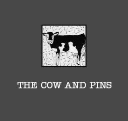

Saturday, November the 10th, 2007
back to: title, date or indexes

Here is a treat. Using his considerable technological wizardry, David OutaSpaceman has masterminded an exciting compact disc featuring over an hour's worth of lopsided Hooting Yard prose from 2004, taken from the original ResonanceFM recordings. Personally, I can't think of a better gift for readers or their nippers to find stuffed in their Christmas stockings. The disc comes in a Pansy Cradledew-designed sleeve featuring the famous “Cow And Pins” tavern sign drawn by Mr Key aeons ago. To get your copy, inclusive of postage and packing, shove £6 into the Hooting Yard PayPal account over there on the right (under ‘Donate’), and send your name and postal address to the Duty Git at hooting.yard@googlemail.com using the header “Gosh, Frank, I can hardly wait to receive my Cow And Pins CD!”